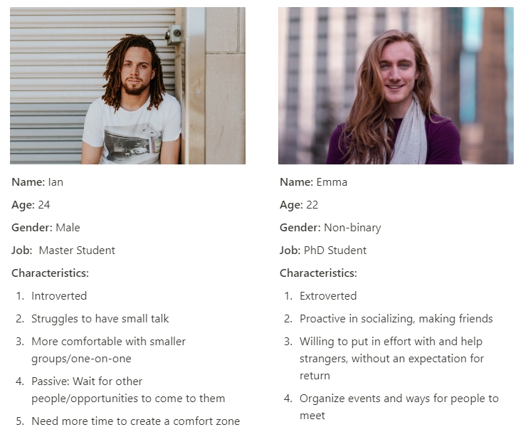
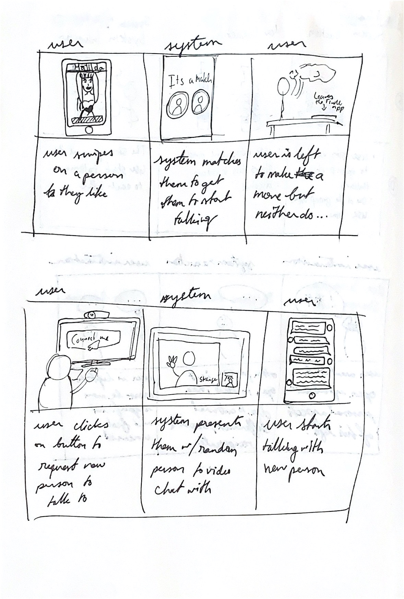
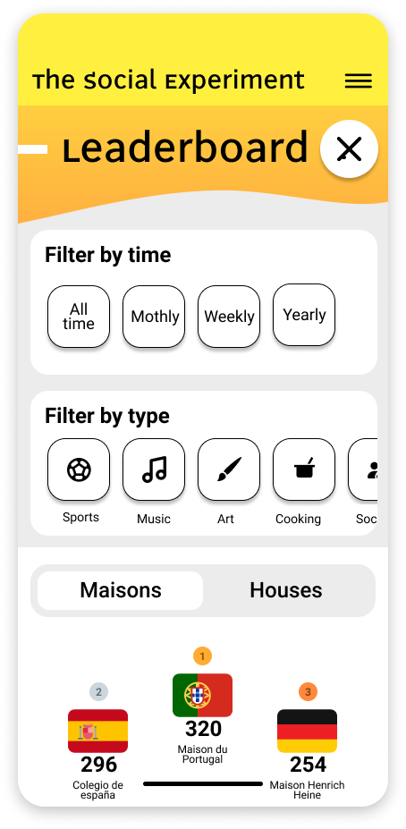

process
The
user center design methodology was applied in this project so the design process can be divided into the four steps of this approach.
understanding of the context of use
The target user of our future solutions was defined in this stage. We decided to study how students that are currently studying abroad meet new people and make new connections. For this purpose, we conducted 4 peer introspections between the members of the group, because all of us were inside the target group, and then we conducted 8 interviews with other students that were facing or had faced this problem.
1. They rely on organized activities, services, or apps to make friends.
2. They are out of their comfort zone and they socialize with strangers to build a comfort zone.
3. Strategizes friendship-making by choosing the best activities that can allow them to meet new people.
4. They constrained about time and they want to make friends quickly
specification of user requirements
After this research, an analysis was accomplished. We did some breakdown analysis to get the different aspects that were relevant for the project and we discovered that a redefinition of the target user was needed.
Experienced international students who haven't yet established their comfort zone/group of friends.
This redefinition of the target user led us to redefine also the problem that we wanted to address creating a new how might we question that we will try to answer in the design of the solution phase.
How might we be able to empower people to go from being acquaintances to being real friends?
To specify the requirements that our future users will need in the solution we designed 3 Personas, a
scenario for them, and a set of interaction snippets

Two personas designed for the project

Some interaction snippets designed for the project
design of solution
We decided to focus our solution on the Cité internationale universitaire de Paris where the students live in different residences that represent different countries. So after conducting a group brainstorming, we came up with the idea of a platform that simulates the same competition that is performed in the Hogwarts school of the harry potter universe. Where the students can participate representing their house and earn points for it in a competition.
A low fidelity prototype was designed, we validated it in an evaluation and then we created a high fidelity prototype based on the first version and redefined with the feedback of the evaluation.

Home page

List of events

Leaderboards
evaluation
We performed a not formal evaluation testing with 3 users to test with them the low fidelity prototypes and receive some feedback to discover the usability problems that we made.
final design
onboarding
We designed an onboarding process in the platform that tried to explain to new users how the system works and what are the steps needed to register.
Onboarding system
events
The residents can create events in the platform and each of them has a name, a type of activity, basic information of time and place, description, points that you can earn, and participants that have already joined. Is very important this last part because we discovered in the user research that the users are very interested in knowing what other people, that they have already met, are going.
profiles
Each resident will have a profile page where the users can see some basic information, their houses, and the last events that they have participated in. Also, each residence or house will have another profile page with basic information, links to social media groups so the residents can easily found the communication channels that the people are using, information about points and rankings, a list of residents, and a hall of fame section with trophies of other years.
leaderboards
To motivate users to participate in the events we implemented some gamification features. As it has been explained before, in each activity the residents that participate will earn points for their houses. The points can be earned by winning competitions or by just participating, so all the people will be rewarded. Then, all the houses are ranked in different leaderboards divided by type of activities or divided by different periods (Monthly, yearly, all-time).

Types of leaderboards